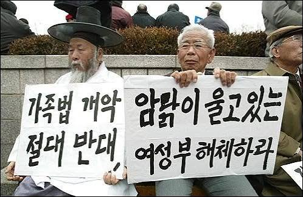
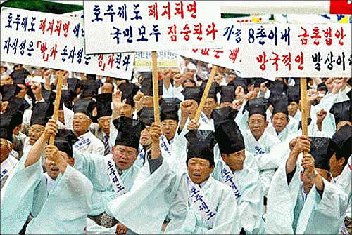
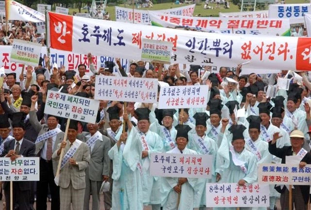

유교적 전통의 호주제를 지켜야 한다던 유가들과 종친회 활동으로 유교에 대한 종교적 믿음이 개박살남
역사적으로 한국의 전통이였나? 아님 일제시대 때 일본으로 부터 도입됨
유가적으로 맞는 얘기인가? 아님 그냥 일본의 제도고 한국의 전통적 유교 해석과 다름
한국 유가의 호주제 존속 의견이 온갖 학문에서 털리고 그 본바탕인 유학에서도 털릴 정도면 왜 유가를 따라야 함?
그래서 유가에 대한 믿음이 개박살남

호주제는 유교에서 온거 아니다